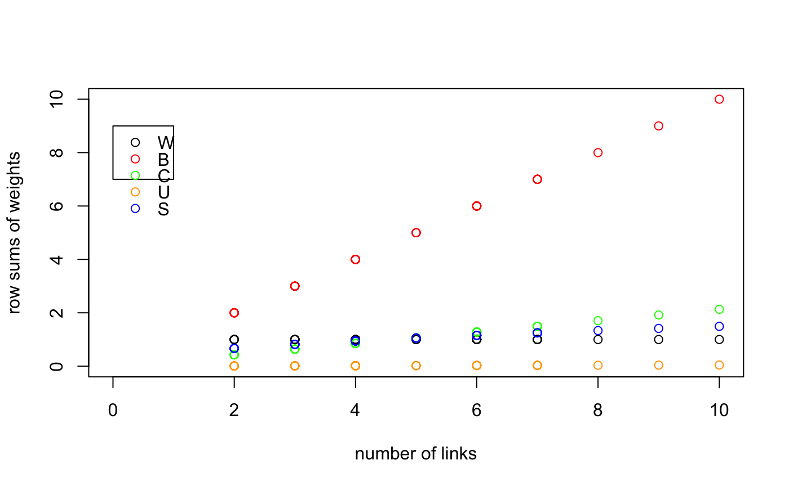

Spatial weights for neighbours lists
nb2listw.RdThe nb2listw function supplements a neighbours list with spatial weights for the chosen coding scheme. The can.be.simmed helper function checks whether a spatial weights object is similar to symmetric and can be so transformed to yield real eigenvalues or for Cholesky decomposition.
nb2listw(neighbours, glist=NULL, style="W", zero.policy=NULL) can.be.simmed(listw)
Arguments
| neighbours | an object of class |
|---|---|
| glist | list of general weights corresponding to neighbours |
| style |
|
| zero.policy | default NULL, use global option value; if FALSE stop with error for any empty neighbour sets, if TRUE permit the weights list to be formed with zero-length weights vectors |
| listw | a spatial weights object |
Details
Starting from a binary neighbours list, in which regions are either listed as neighbours or are absent (thus not in the set of neighbours for some definition), the function adds a weights list with values given by the coding scheme style chosen. B is the basic binary coding, W is row standardised (sums over all links to n), C is globally standardised (sums over all links to n), U is equal to C divided by the number of neighbours (sums over all links to unity), while S is the variance-stabilizing coding scheme proposed by Tiefelsdorf et al. 1999, p. 167-168 (sums over all links to n).
If zero policy is set to TRUE, weights vectors of zero length are inserted for regions without neighbour in the neighbours list. These will in turn generate lag values of zero, equivalent to the sum of products of the zero row t(rep(0, length=length(neighbours))) %*% x, for arbitraty numerical vector x of length length(neighbours). The spatially lagged value of x for the zero-neighbour region will then be zero, which may (or may not) be a sensible choice.
If the sum of the glist vector for one or more observations is zero, a warning message is issued. The consequence for later operations will be the same as if no-neighbour observations were present and the zero.policy argument set to true.
The “minmax” style is based on Kelejian and Prucha (2010), and divides the weights by the minimum of the maximum row sums and maximum column sums of the input weights. It is similar to the C and U styles; it is also available in Stata.
Value
A listw object with the following members:
one of W, B, C, U, S, minmax as above
the input neighbours list
the weights for the neighbours and chosen style, with attributes set to report the type of relationships (binary or general, if general the form of the glist argument), and style as above
References
Tiefelsdorf, M., Griffith, D. A., Boots, B. 1999 A variance-stabilizing coding scheme for spatial link matrices, Environment and Planning A, 31, pp. 165--180; Kelejian, H. H., and I. R. Prucha. 2010. Specification and estimation of spatial autoregressive models with autoregressive and heteroskedastic disturbances. Journal of Econometrics, 157: pp. 53--67.
See also
Examples
if (require(rgdal, quietly=TRUE)) { example(columbus, package="spData") coords <- coordinates(columbus) cards <- card(col.gal.nb) col.w <- nb2listw(col.gal.nb) plot(cards, unlist(lapply(col.w$weights, sum)),xlim=c(0,10), ylim=c(0,10), xlab="number of links", ylab="row sums of weights") col.b <- nb2listw(col.gal.nb, style="B") points(cards, unlist(lapply(col.b$weights, sum)), col="red") col.c <- nb2listw(col.gal.nb, style="C") points(cards, unlist(lapply(col.c$weights, sum)), col="green") col.u <- nb2listw(col.gal.nb, style="U") points(cards, unlist(lapply(col.u$weights, sum)), col="orange") col.s <- nb2listw(col.gal.nb, style="S") points(cards, unlist(lapply(col.s$weights, sum)), col="blue") legend(x=c(0, 1), y=c(7, 9), legend=c("W", "B", "C", "U", "S"), col=c("black", "red", "green", "orange", "blue"), pch=rep(1,5)) summary(nb2listw(col.gal.nb, style="minmax")) dlist <- nbdists(col.gal.nb, coords) dlist <- lapply(dlist, function(x) 1/x) col.w.d <- nb2listw(col.gal.nb, glist=dlist) summary(unlist(col.w$weights)) summary(unlist(col.w.d$weights)) }#> #> colmbs> if (requireNamespace("rgdal", quietly = TRUE)) { #> colmbs+ library(rgdal) #> colmbs+ columbus <- readOGR(system.file("shapes/columbus.shp", package="spData")[1]) #> colmbs+ plot(columbus) #> colmbs+ } #> OGR data source with driver: ESRI Shapefile #> Source: "/Library/Frameworks/R.framework/Versions/3.4/Resources/library/spData/shapes/columbus.shp", layer: "columbus" #> with 49 features #> It has 20 fields #> Integer64 fields read as strings: COLUMBUS_ COLUMBUS_I POLYID#> #> colmbs> if (requireNamespace("spdep", quietly = TRUE)) { #> colmbs+ library(spdep) #> colmbs+ col.gal.nb <- read.gal(system.file("weights/columbus.gal", package="spData")[1]) #> colmbs+ }#> Characteristics of weights list object: #> Neighbour list object: #> Number of regions: 49 #> Number of nonzero links: 230 #> Percentage nonzero weights: 9.579342 #> Average number of links: 4.693878 #> Link number distribution: #> #> 2 3 4 5 6 7 8 9 10 #> 7 7 13 4 9 6 1 1 1 #> 7 least connected regions: #> 1 6 31 39 42 46 47 with 2 links #> 1 most connected region: #> 20 with 10 links #> #> Weights style: minmax #> Weights constants summary: #> n nn S0 S1 S2 #> minmax 49 2401 23 4.6 50.48#> Min. 1st Qu. Median Mean 3rd Qu. Max. #> 0.06977 0.13114 0.17710 0.21304 0.27124 0.67178# introducing other conditions into weights - only earlier sales count # see http://sal.uiuc.edu/pipermail/openspace/2005-October/000610.html data(baltimore, package="spData") set.seed(211) dates <- sample(1:500, nrow(baltimore), replace=TRUE) nb_15nn <- knn2nb(knearneigh(cbind(baltimore$X, baltimore$Y), k=15)) glist <- vector(mode="list", length=length(nb_15nn)) for (i in seq(along=nb_15nn)) glist[[i]] <- ifelse(dates[i] > dates[nb_15nn[[i]]], 1, 0) listw_15nn_dates <- nb2listw(nb_15nn, glist=glist, style="B")#> Warning: zero sum general weightswhich(lag(listw_15nn_dates, baltimore$PRICE) == 0.0)#> [1] 10 35 69 73 76 81 104 115 127 137 143 157 165 170 189 199which(sapply(glist, sum) == 0)#> [1] 10 35 69 73 76 81 104 115 127 137 143 157 165 170 189 199ex <- which(sapply(glist, sum) == 0)[1] dates[ex]#> [1] 18dates[nb_15nn[[ex]]]#> [1] 232 337 496 344 404 281 364 115 357 204 315 460 297 79 394